Sources
Matériaux d'origine. Le design validé est celui des maquettes ; ces écrans sont l'historique.
Écrans dessinés — série 1 (dont la montre : 11 à 14)
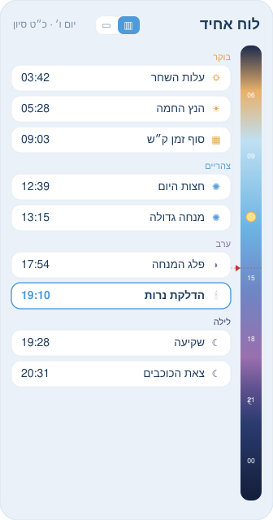
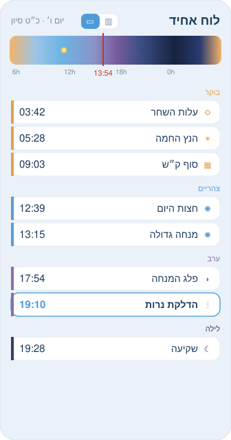
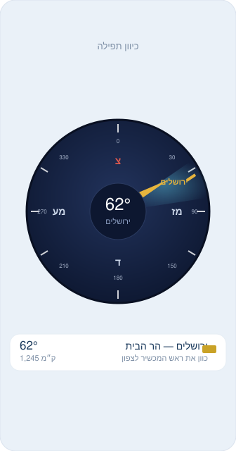
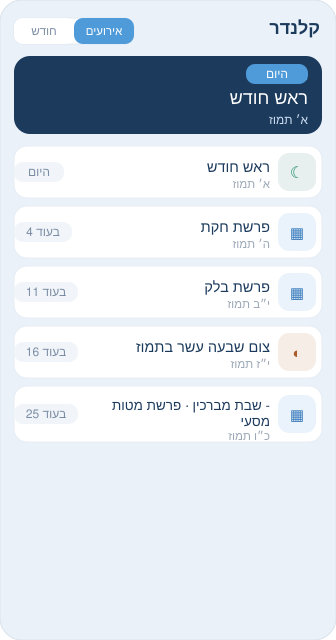
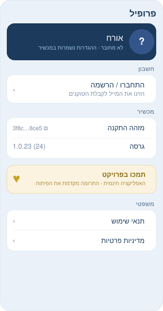
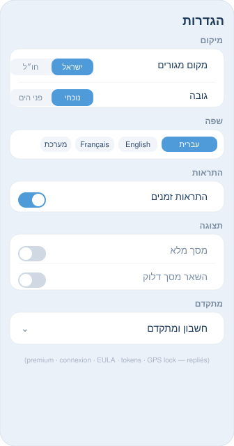
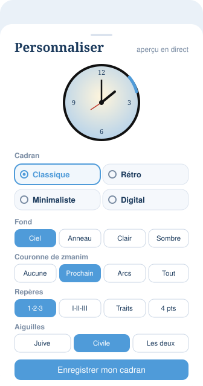
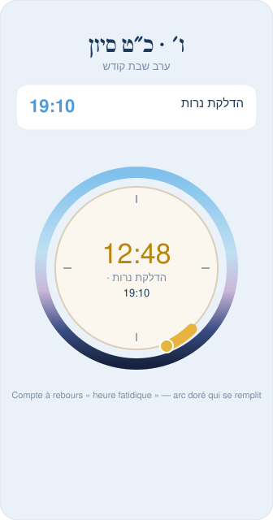
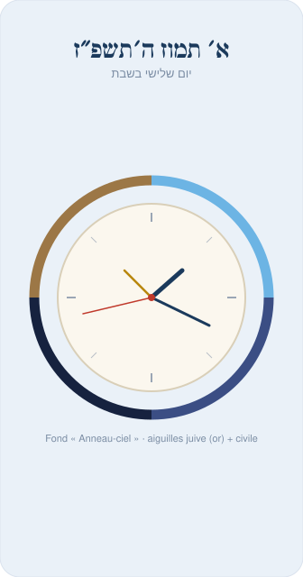
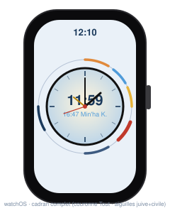
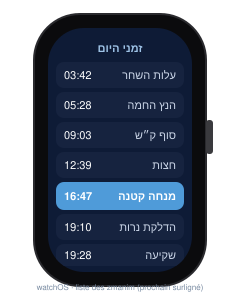
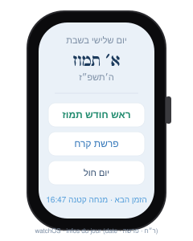
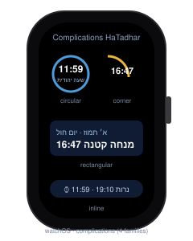
Écrans dessinés — série 2
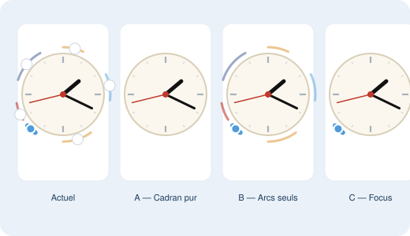
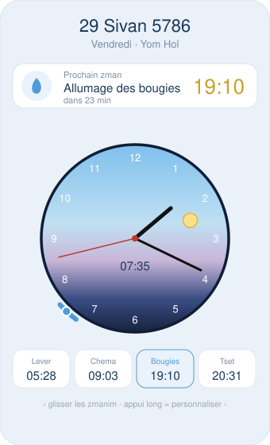
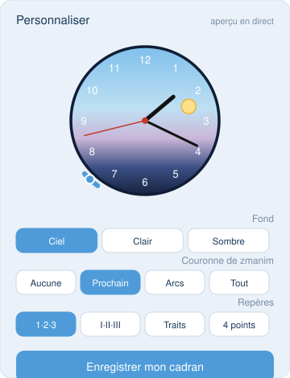
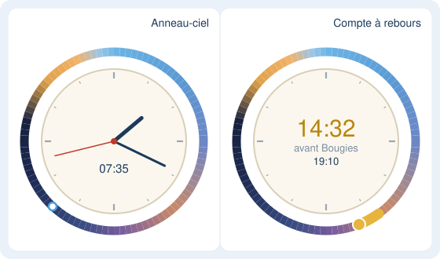
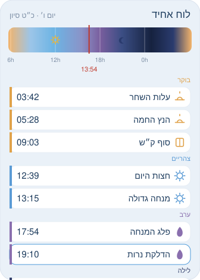
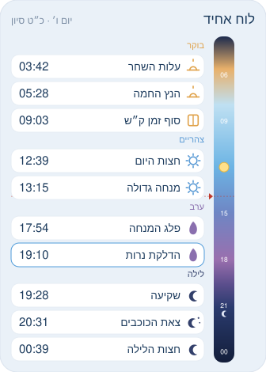
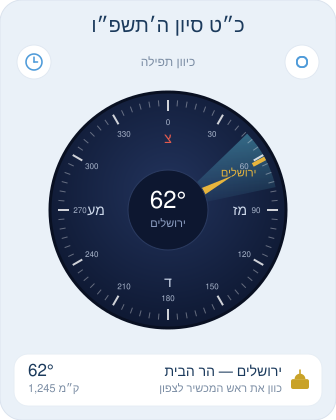
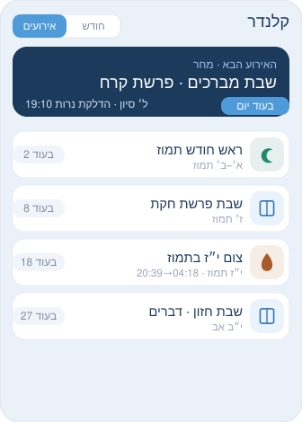
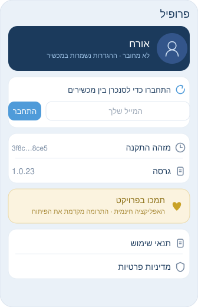
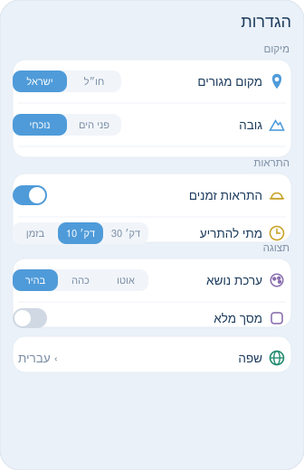